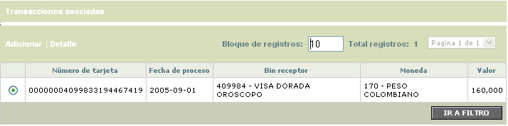
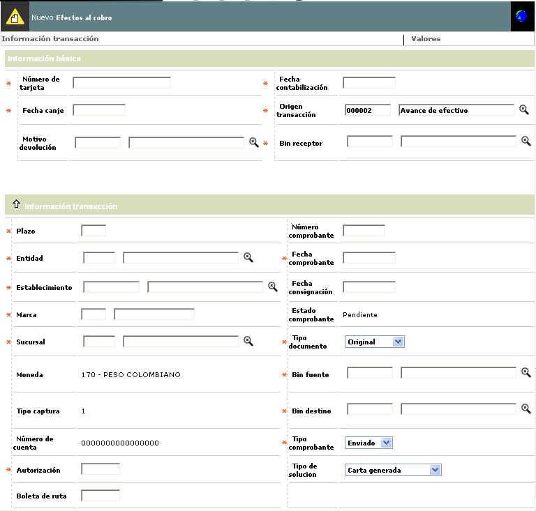
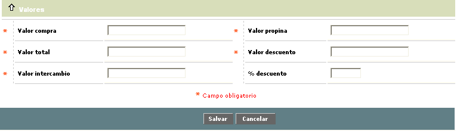
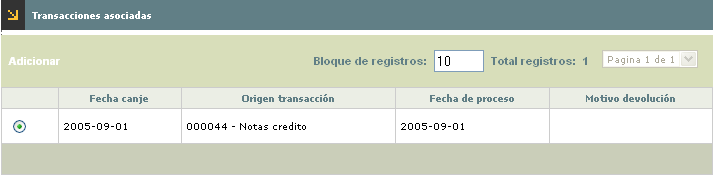
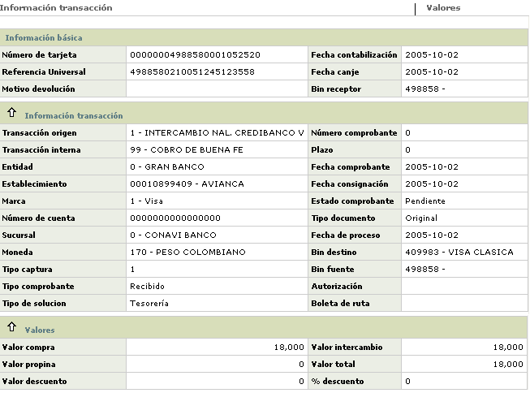
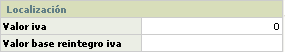

Depósitos al cobro
A través de esta forma o pantalla se tramitan las transacciones de notas crédito que se han recibido a través del canje nacional. Estos pagos corresponden a transacciones adquiridas en los establecimientos de la entidad que corresponden a tarjehabientes de otras entidades que habiendo agotado infructuosamente el proceso de intercambio, o por haber excedido notoriamente los diferentes plazos determinados por la franquicia, requieren iniciar un proceso de negociación o gestión entre las dos entidades involucradas, conocido como efectos o comprobantes al cobro, o comprobantes de buena fe.
El formulario contiene las opciones Adicionar, Detalle y el hipervículo de transacciones sociadas. Adicionalmente, cuenta con un filtro de búsqueda.

Filtro: Se pueden realizar consultas a través de las siguientes opciones:

Fecha de proceso |
En este campo obligatorio, en formato YYYY-MM-DD se ingresa la fecha inicial que delimita el periodo para el cual se desea consultar el movimiento aplicado o pendiente. |
Estado comprobante |
Campo obligatorio, que muestra la condición en que se encuentra actualmente el comprobante : Solucionado o Pendiente. |
Numero de tarjeta |
Este campo permite ingresar cualquier valor alfanumérico de 23 caracteres. |
| Bin receptor | Campo alfanumérico de ochos posiciones, en el cual se registra el bin de donde proviene el depósito al cobro. |
Adicionar: Si el usuario invoca la opción Adicionar se despliega un formulario con los siguientes campos:


Deficición de Campos
Fecha contabilización |
Campo obligatorio, que contiene la fecha en formato YYYY-MM-DD, en que se afectó contablemente los saldos del tarjetahabiente, usualmente es la misma fecha de proceso o canje. |
Fecha canje |
Campo en formato YYYY-MM-DD obligatorio, que muestra la fecha en que se efectuó el proceso del archivo en que viajó la transacción enviada |
| Origen transacción | Canpo obligatorio con lista de valores que permite ingresar cualquier valor alfanumérico de máximo 6 caracteres. |
| Motivo devolución | Campo obligatorio con lista de valores que muestra diferentes motivos devolución, según la transacción original que se haya ingresado en el campo anterior. |
| Bin receptor | Campo alfanumérico obligatorio,de ochos posiciones, en el cual se registra el bin de donde proviene el depósito al cobro. |
Número comprobante |
Ilustra el número del voucher asociado a la transacción. |
Fecha comprobante |
Campo que muestra la fecha física del comprobante de consumo o utilización en formato YYYY-MM-DD. |
| Establecimiento | Campo alfanumérico de 11 dígitos, obligatorio, en el que se registra el código único que identifica, ante la franquicia, al establecimiento donde se realiza el consumo. |
| Fecha consignación | Contiene la fecha en formato YYYY-MM-DD en la cual el establecimiento efectuó la consignación de los comprobantes o en la que ingresó el depósito electrónico asociado a la transacción. |
Bin fuente |
Campo que ilustra el prefijo o bin centro de proceso de la entidad a través de la que ingresa la transacción. |
Tipo captura |
Campo de salida en el que se señala el nombre asociado al código definido por la franquicia que identifica la manera como ingresó, por medio de su red, la transacción al sistema (POS, ATM’s, oficinas, etc.). |
Bin destino |
Señala el prefijo o bin centro de proceso de la entidad emisora del plástico. |
Nùmero de cuenta |
Campo de salida que muestra las cuentas que tiene el establecimiento en la entidad. |
| Tipo comprobante | Campo obigatorio con lista de valores en el que se puede seleccionar entre las opciones enviado o recibido. |
Autorización |
Campo obligatorio en el que se ingresa el número de la autorización asignado a la transacción por el procesador o la entidad. |
| Tipo solución. | Campo con lista de valores en el que se escoge la solución dada por la entidad. |
Valor compra |
Muestra el monto de la transacción de utilización o consumo sin incluir el monto de la propina concedida por el tarjetahabiente. |
Valor propina |
Refleja el monto de la propina otorgada por el cliente. |
Valor descuento |
Contiene el valor deducido al establecimiento al liquidarle la comisión o descuento sobre el valor del consumo realizado por el cliente. |
Valor intercambio |
Muestra el valor neto de la transacción, esto es, valor del consumo o utilización más valor propina, más valor IVA menos valor descuento. |
Porcentaje descuento |
Reseña el valor del porcentaje aplicado a la compra o consumo fraudulento realizados en ese establecimiento a manera de comisión o descuento. |
Transacciones asociadas: En este formulario se parametrizan las transacciones segun el rol que se esté manejando por ejemplo: si la tarjeta y el establecimiento son de entidad, se asocian a la trx 000043 y si el establecimiento no es de la entidad. se asocia la transacción 00044 (original) que es una nora crédito de intercambio.

Detalle: Si el usuario invoca la opción Detalle se despliega el siguiente formulario:

Dentro del detalle se encuentra el globo de localización el cual despliega el siguiente formulario

Opciones especiales
|
Aplicar movimiento: Una vez seleccionado el registro es posible aplicar el movimiento. |